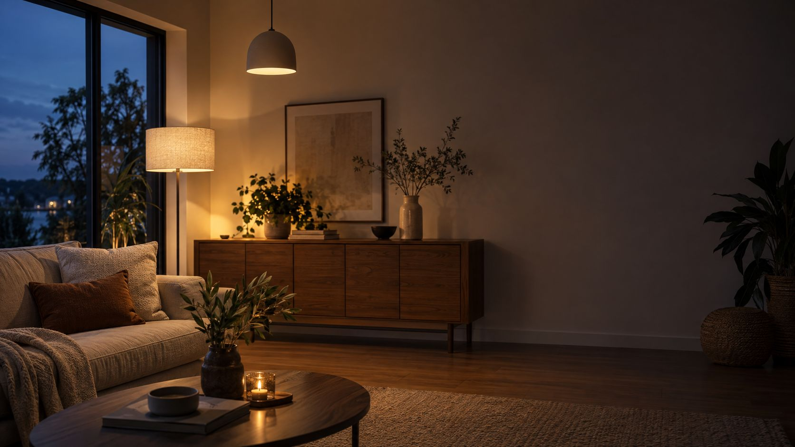
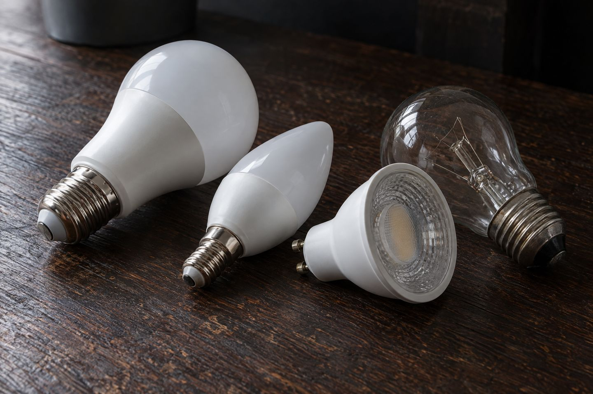

LED-Lampen: Wie viel spart der Tausch?
Lumen statt Watt, die richtige Lichtfarbe für jeden Raum und was der Wechsel von Halogen auf LED im Jahr bringt. Mit Spar-Rechner.
Gute LED-Lampen brauchen laut Verbraucherzentrale Hamburg rund 90 Prozent weniger Strom als eine Glühlampe gleicher Helligkeit. Eine LED mit etwa 700 Lumen statt einer Halogenlampe spart laut Verbraucherzentrale in zehn Jahren mehr als 100 €, wenn sie rund drei Stunden am Tag brennt. Beim Kauf zählen Lumen, Lichtfarbe in Kelvin und ein Farbwiedergabe-Wert von mindestens 80.
Lumen statt Watt.
Früher stand die Wattzahl für die Helligkeit. Bei LED sagt sie nur, wie viel Strom die Lampe braucht. Wie hell sie ist, verrät die Zahl in Lumen (lm) auf der Packung.
Wandelt den größten Teil des Stroms in Wärme um. Klassische Glühlampen und die meisten Halogenlampen werden in der EU wegen des hohen Verbrauchs nicht mehr verkauft.
Etwas sparsamer als die Glühlampe, aber laut Verbraucherzentrale noch weit von LED entfernt. Einige Spezialformen gibt es weiterhin zu kaufen.
Faustregel der Verbraucherzentrale Hamburg: Die Wattzahl der alten Glühlampe durch zehn teilen, dann hast du ungefähr die Leistung der passenden LED.
Auf der Packung steht außerdem, wie viele kWh die Lampe in 1.000 Stunden braucht. Eine LED mit 8 W braucht also 8 kWh in 1.000 Stunden. Teilst du Lumen durch Watt, siehst du, wie effizient sie ist: Die Verbraucherzentrale rechnet für 809 lm bei 12 W rund 67 Lumen pro Watt vor, gute Lampen schaffen mehr.
Was bringt der Tausch bei dir?
Trag ein, welche Lampen du ersetzen willst und wie lange sie brennen. Der Rechner zeigt die Ersparnis im Jahr und wann sich die neuen Lampen bezahlt machen. Die Werte bleiben nur in deinem Browser.
So rechnen wir
Strom pro Jahr = Watt mal Stunden pro Tag mal 365 Tage, geteilt durch 1.000, für alte und neue Lampe. Der Unterschied mal Strompreis ist die Ersparnis. Die Amortisation teilt den Kaufpreis aller LEDs durch die Ersparnis pro Monat. Zum Vergleich die Rechnung der Verbraucherzentrale: 1.000 Brennstunden im Jahr, 35 Cent pro kWh, Halogen gegen LED mit rund 700 Lumen, ergibt mehr als 100 € in zehn Jahren.
Am meisten bringt der Wechsel im Wohnzimmer, in der Küche und im Flur, wo das Licht abends stundenlang an ist. Eine Lampe im Abstellraum, die ein paar Minuten am Tag brennt, kannst du weiterverwenden, bis sie kaputtgeht.

Welches Licht für welchen Raum?
Die Lichtfarbe steht in Kelvin (K) auf der Packung. Je niedriger die Zahl, desto wärmer und gelblicher wirkt das Licht. Dazu kommt die Farbwiedergabe Ra: Glühlampe und Sonne haben 100.
| Raum | Lichtfarbe | Farbwiedergabe |
|---|---|---|
| Wohnzimmergemütlich | warmweiß, etwa 2.500 bis 2.700 K | Ra mindestens 80 |
| Schlafzimmerabends ruhig | warmweiß, 2.700 bis 3.000 K | Ra mindestens 90 |
| Badam Spiegel | warmweiß bis neutral, je nach Geschmack | Ra mindestens 90 |
| Küche, EsstischFarben echt sehen | warmweiß, 2.700 bis 3.300 K | Ra möglichst über 90 |
| Arbeitsplatzkonzentriert | neutral- bis tageslichtweiß, 4.000 bis 6.500 K | Ra mindestens 80 |
Werte nach Verbraucherzentrale und Verbraucherzentrale Hamburg. Ra unter 80 lässt Farben blass wirken und ist für Wohnräume nicht zu empfehlen.
Worauf es beim Kauf ankommt.
Billige LEDs flackern manchmal, geben kaltes Licht oder halten nicht lange. Diese fünf Angaben auf der Packung helfen beim Vergleich.
Lumen passend zum Raum
Für den Ersatz einer 60-W-Glühlampe brauchst du etwa 700 bis 800 Lumen. Lieber etwas heller kaufen und dimmen, als im Halbdunkel zu sitzen.
Sockel und Form
E27 ist das große Gewinde, E14 das kleine für Kerzenlampen. Spots haben oft einen Stecksockel wie GU10. Alte Lampe mitnehmen oder ein Foto vom Sockel machen.
Dimmbar nur, wenn es draufsteht
Die meisten LEDs sind laut Verbraucherzentrale nicht dimmbar. Hängt die Lampe an einem Dimmer, auf das Wort „dimmbar“ achten. Hersteller veröffentlichen Listen, welche Dimmer passen.
Schaltzyklen und Lebensdauer
Die meisten LEDs halten laut Verbraucherzentrale etwa 25.000 Stunden, bei knapp drei Stunden am Tag mehr als 25 Jahre. Für Flur und Bad, wo oft geschaltet wird, mindestens 50.000 Schaltzyklen wählen.
Energielabel lesen
Seit September 2021 gilt für Lampen die Skala A bis G. Auch Lampen in den roten Klassen sind laut Verbraucherzentrale noch sehr sparsam. Mehr dazu auf der Seite Energielabel.
Lampen fest in Decke oder Wand einbauen, etwa neue Einbauspots mit Trafo, gehört in die Hand eines Elektrofachbetriebs. Eine Lampe in eine vorhandene Fassung drehen kannst du selbst: vorher Licht ausschalten und die alte Lampe abkühlen lassen.
Alte Lampen richtig entsorgen.
LED- und Energiesparlampen sind laut Umweltbundesamt Elektrogeräte. Du gibst sie kostenlos am Wertstoffhof, oft auch beim Schadstoffmobil ab. Supermärkte, Discounter, Drogerien und Elektromärkte mit mindestens 800 m² Verkaufsfläche, die Elektrogeräte anbieten, müssen alte Lampen ebenfalls kostenlos zurücknehmen. Energiesparlampen enthalten Quecksilber; im Kinderzimmer rät die Verbraucherzentrale deshalb, sie durch LED zu ersetzen.
Alte Glüh- und Halogenlampen fallen nicht unter das Elektrogesetz und gehören laut Umweltbundesamt in den Restmüll, nicht ins Altglas.
Was beim Tauschen hilft.
Die Links führen zu einer Suche bei Amazon. Vor dem Kauf Sockel, Lumen und Kelvin mit der Tabelle oben abgleichen.Anzeige
Kurz beantwortet.
Wie viel Strom spart eine LED gegenüber einer Glühlampe?
Laut Verbraucherzentrale Hamburg brauchen gute LEDs rund 90 Prozent weniger Strom als eine Glühlampe gleicher Helligkeit. Statt 60 W reichen etwa 6 bis 8 W.
Welche LED ersetzt eine 60-Watt-Glühlampe?
Eine LED mit etwa 700 bis 800 Lumen. Die Verbraucherzentrale nennt rund 700 Lumen für eine 60-W-Glühlampe oder eine 42-W-Halogenlampe.
Lohnt es sich, funktionierende Halogenlampen auszutauschen?
Bei Lampen, die täglich mehrere Stunden brennen, meist ja. Laut Verbraucherzentrale spart eine LED mit rund 700 Lumen statt Halogen bei 1.000 Stunden im Jahr mehr als 100 € in zehn Jahren. Wie schnell sich das bei dir rechnet, zeigt der Rechner.
Welche Lichtfarbe ist die richtige fürs Wohnzimmer?
Warmweiß mit etwa 2.500 bis 2.700 Kelvin. Kälteres Licht ab 4.000 Kelvin passt eher an den Schreibtisch.
Wohin mit kaputten LED-Lampen?
Nicht in den Hausmüll und nicht ins Altglas. LED- und Energiesparlampen gehören laut Umweltbundesamt zu einer Sammelstelle, etwa zum Wertstoffhof oder Schadstoffmobil. Größere Supermärkte, Drogerien und Elektromärkte nehmen sie ebenfalls kostenlos zurück.
Lichterketten für die Adventszeit: siehe Weihnachtsbeleuchtung. Wie dein Gesamtverbrauch dasteht, zeigt Stromfresser finden.
- Verbraucherzentrale: LED-Lampen, worauf Sie beim Kauf achten sollten verbraucherzentrale.de
- Verbraucherzentrale Hamburg: Welche Lampe brauche ich? vzhh.de
- Vattenfall: So lesen Sie die Verpackung einer LED vattenfall.de
- Umweltbundesamt: Wohin mit kaputten Lampen? umweltbundesamt.de
Allgemeine Informationen ohne Gewähr. Die Rechnung ist eine Modellrechnung. Geprüft am 15.11.2026.